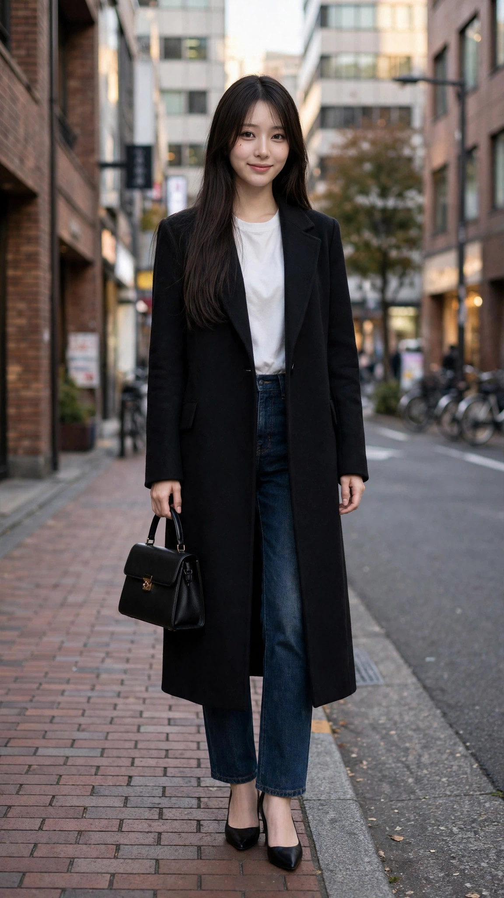

丸の内のモデルDは黒のロングコートに白トップスと濃インディゴデニム、新宿のモデルB2はネイビーのロングコートに白ブラウスと黒スキニー。ロングコートの縦のラインで全身を引き締める組み立ては共通で、差が出るのはコートの色と下半身の締め方です。
黒×濃デニムはコントラストが強く、クールで都会的な方向。ネイビー×黒スキニーは色の段差が小さく、大人っぽい余裕のある方向です。どちらも中の白が顔まわりを明るく保つ役割をしています。
モデルDは骨格が未定（記録なし）／ブルベ冬、モデルB2も骨格が未定（記録なし）／ブルベ冬。ブルベ冬は黒やネイビーのような深い色が映えるタイプで、ロングコートの色選びと相性がいい組み合わせです。